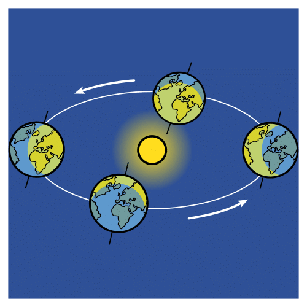

Dictionary
Angle

Definition:
The space between two lines that meet.
El espacio entre dos líneas que se juntan en un punto.
Example:
The Earth’s axis is at an angle to the Sun, causing the seasons.
El eje de la Tierra está inclinado, lo que causa las estaciones.
Spanish word:
Ángulo
Average
Definition:
The middle value, not too high or too low.
El valor que está en el medio, ni muy alto ni muy bajo.
Example:
The average temperature today is 20°C.
La temperatura media hoy es de 20°C.
Spanish word:
Promedio, media
Get lost

Definition:
To not know where you are or how to find your way.
Perderse, no saber dónde estás o cómo llegar a un lugar.
Example:
I get lost when I walk in the city.
Me pierdo cuando camino por la ciudad.
Spanish word:
Perderse
Living thing

Definition:
A being that is born, grows, reproduce, and dies.
Un ser que nace, crece, se reproduce y muere.
Example:
A dog is a living thing.
Un perro es un ser vivo.
Spanish word:
Ser vivo
Make sense

When something is clear or easy to understand.
Cuando algo es lógico o fácil de entender.
The answer makes sense because it is correct.
La respuesta tiene sentido porque es correcta.
Spanish word:
Tener sentido
Reach
Definition:
To get to a place or point.
Alcanzar algo, llegar a un lugar o punto.
Example:
The Sun’s rays reach the Earth to give us light and heat.
Los rayos del Sol alcanzan la Tierra para darnos luz y calor.
Spanish word:
Alcanzar
Revolve

Definition:
To move around something in a circle.
Girar alrededor de algo, como un círculo.
Example:
The Earth revolves around the Sun.
La Tierra revolve alrededor del Sol.
Spanish word:
Girar, dar vueltas
Tide

Definition:
The rise and fall of the sea level caused by the Moon's gravity.
El movimiento del agua del mar que sube y baja debido a la gravedad de la Luna.
Example:
The tide is high in the morning and low in the evening.
La marea está alta por la mañana y baja por la tarde.
Spanish word:
Marea
Tilted
Definition:
Not straight, at an angle.
Inclinada, que no está recta, en un ángulo.
Example:
The Earth is tilted on its axis.
La Tierra está inclinada sobre su eje.
Spanish word:
Inclinado, inclinada
 To complete your mission, you need to know how celestial bodies move.
To complete your mission, you need to know how celestial bodies move. Now you will learn:
Now you will learn: Why we have the seasons.
Why we have the seasons.


 The Earth takes 1 day to rotate on its own axis.
The Earth takes 1 day to rotate on its own axis..png "Conversar") Talk to your classmate about the pictures
Talk to your classmate about the pictures Use the sentence starters para ayudarte.
Use the sentence starters para ayudarte.

 You are working very well.
You are working very well. Now remember the new concepts.
Now remember the new concepts..png "Elegir") Choose the options that you prefer.
Choose the options that you prefer.

 You will work with a partner.
You will work with a partner..png "Escribir") Write the description of the Earth and the Moon.
Write the description of the Earth and the Moon..png "Exponer") Present orally your description.
Present orally your description.{kind=link}
{kind=link}
{kind=link}
{kind=link}